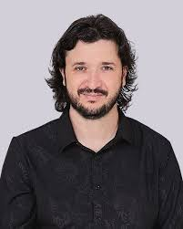
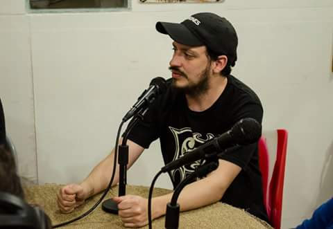

Desde Cero Voces Ciudadanas
"Desde Cero Voces Ciudadanas" es un programa radial tipo magazine de actualidad y cultural. Va dirigido a aquellas voces que muchas veces suelen ser silenciadas en los medios hegemónicos. El objetivo principal de su creación fue el de construir un canal para diversas voces, y un espacio de difusión para las mismas.
Por tal motivo, a través de distintos testimonios, historias de vida, noticias, entrevistas, etc. En cada emisión apunto a construir un periodismo visceral que se caracteriza también por ser feminista y con perspectiva de género. "Mi bebe radial" como me gusta llamarlo nació un día de lluvia cerca de la universidad, junto a dos compañeros de la facu bajo el nombre de Desde Cero, y con el tiempo fue creciendo y mutando, desde el año 2018 al presente.
Hoy a siete años de llevar a cabo este proyecto comunicacional puedo decir que encontré mi lugar, en el cual, construir otro tipo de periodismo, y me llena de orgullo el recordar la cantidad de contenido creado con todas las voces que fueron pasando, y dejando su huella en este hermoso camino del comunicar.
Nuestras Columnas
| Nombre de la Columna | Información | Columnista |
|---|---|---|
| Resistiendo con Salud | Nuestra píldora informacional y de actualidad sanitaria. |
Prof. Lic. Jorge Lujan
Lic. en Enfermería. Especialista en
Cuidados Críticos |
| Cultuza | Un coctel radial de cultura, pop e ituza, único, variado y lleno de curiosidades. En el estaremos al tanto de todo lo que tiene que ver con el mundo de los comics, las historietas, la literatura y la cultura en general. |

Carlos Ruiz
Escritor de cuentos, historietas y
microcuentos. |
| Bloco Almada | Bloco Almada nuestro espacio etereo donde la voz de los artistas musicales se hace oír y nos invita a conocer sus historias junto al periodista brasileño Rafael Pompeu, mediante entrevistas nacionales e internacionales. |

Rafael PompeuArtista musical, cantautor brasileño y vocalista de la banda de rock "Rockstrada". Periodista, publicitario, digital marketer. |
| Mundo Perro | Nuestra columna destinada al cuidado de nuestras mascotas y la protección y preservación de los animales |
Federico GarciaAdiestrador Canino Profesional UBA |
| Zoompolitikon | Nuestra columna destinada al cuidado de nuestras mascotas y la protección y preservación de los animales |

Camila SorianoProfesora de Historia. Presidenta del ISFD 45 de Haedo. Claudio EtatMúsico, bajista, integrante de la banda de rock "Estado Cronopio" |
| Brilla de Azul | Columna destinada a hablar, concientizar y visibilizar el autismo. |
Asociación Civil Familias Tea ItuzaingóOrganización no gubernamental |
| Malvinizar | Proyecto histórico y cultural destinado a honrar a nuestros héroes, y de crear conciencia sobre la memoria de Malvinas, y nuestro reclamo de soberanía, a través de entrevistas a ex combatientes y testimonios que quieran contarnos su historia y acompañarnos a malvinizar. |

Lucas Emiliano del ZarMusico y Cantautor Argentino autodidacta. Luis Alberto MartinezExcombatiente de Malvinas Argentinas. |
| Conectando con tu esencia |

Maria del Valle GalvánTerapeuta Holística |